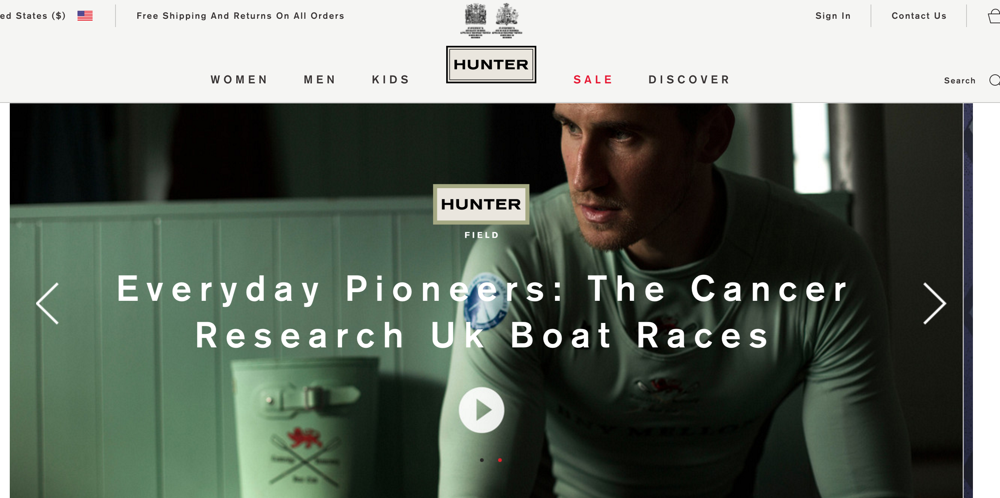
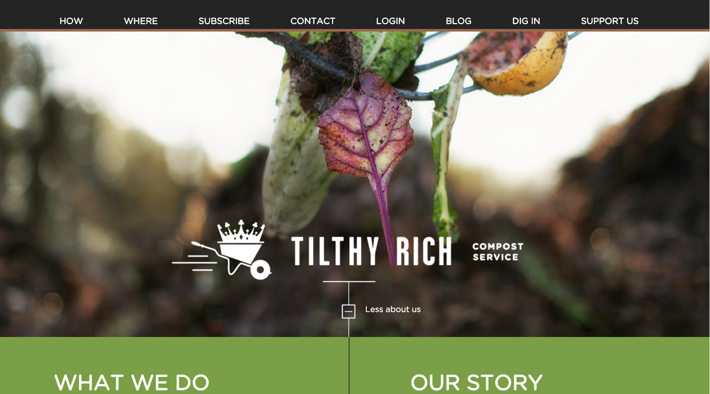

Savas Labs - Duke Neurosurgery
Web redesign proposal
By Principal Director: Chris Russo
Presentation overview
Slides: http://chrisarusso.github.io/We'll cover
- Your goals
- Our process
- Proposal highlights
- Portfolio
- Our credentials
- Q&A
Your goals
- Showcase the full scope of our research endeavors
- Showcase the breadth and excellence of our training programs
- Increase/capture higher-caliber applicants to our training program
- Messaging will support overall Department mission, vision and goals
- Site design will be uncluttered, contemporary, and visually appealing
- Ease of CMS administration
Our process
- Discovery phase
- Weekly meetings
- Iterate, stage, and prioritize.
Proposal highlights
- Aggressive timeline as proposed
- We're excited to work with Tracey
- Copywriting and photography services available
Portfolio Work
Hunter Boots
 http://us.hunterboots.com/Crown Beverage Company
 http://www.crowncork.com/
http://www.crowncork.com/
Tilthy Rich Compost
 https://tilthyrichcompost.com/Our credentials
We...
- host the Triangle Drupal Meetup
- speak at conferences: Asheville, Orlando, and Drupalcon New Orleans 2016
- share our expertise on our blog: (Drupal 6 upgrade specific series: 1, 2, 3, 4)
- donate code back to the Drupal community
- have Acquia developer certification (Lisa Ridley)
- donate our skills to contribute to organizations with Drupal websites (Durham Atletico, Warmshowers.org Foundation)
Questions?
Savas Labs